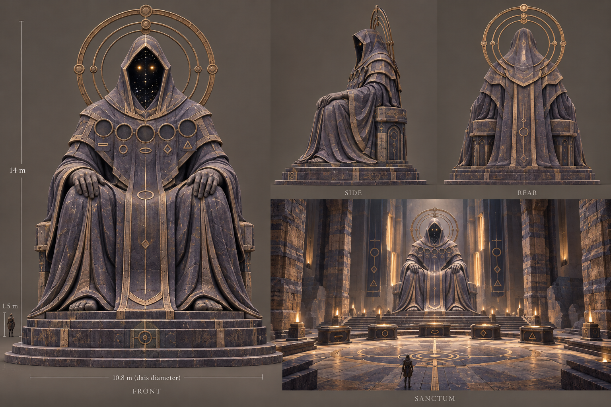
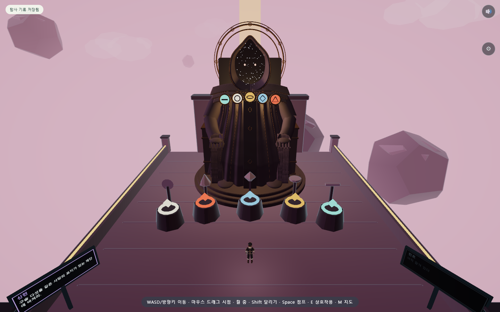
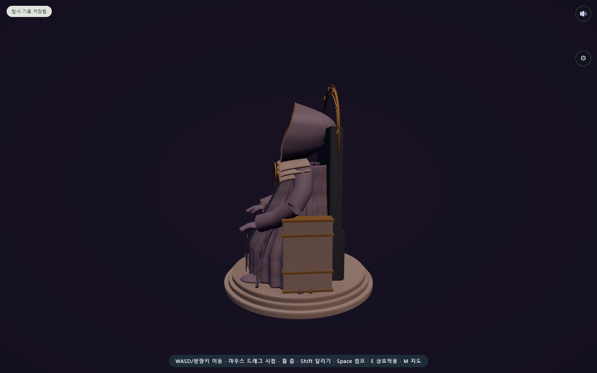
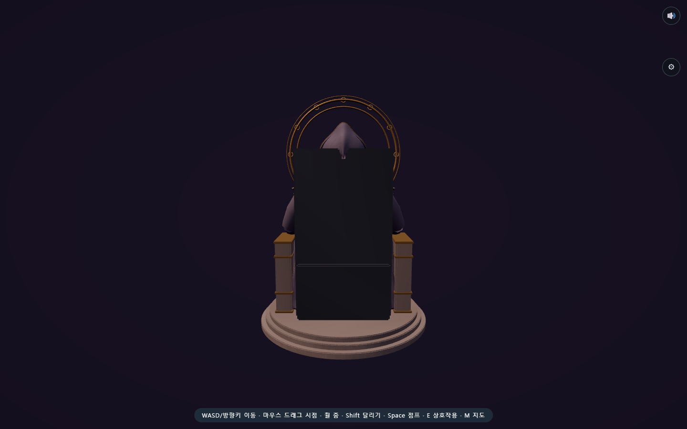

시간의 수호자 · 제작 비교
본편 · 여덟 장면 검수 · 전체 결과 · 제작 계약
목표 시안 — 생성 이미지. 실제 게임 화면과 구분한다.
실제 웹 모델 — Blender GLB, 바닥 y=0, 높이 14.038m. 다섯 문양과 별빛 후드·청동 후광을 연결했다. 구슬을 바친 중간 상태를 준비한 검수 화면이며 완주 근거는 별도 실제 입력 검사에 있다.
모델 측면 — 주변 건축을 숨긴 자산 검사 장면
모델 후면 — 주변 건축을 숨긴 자산 검사 장면
시안의 미세 균열·천 조각·전당 주변 장식을 모두 재현한 상태는 아니다. 앞의 세 관문과 제단 동선은 유지했다. 19개 메시·219,204삼각형은 모델 자체 수치이며 전체 렌더 패스나 학생 기기 프레임과 다르다.